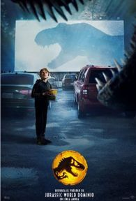
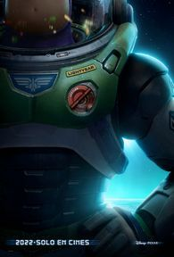

JURASSIC WORLD: DOMINIO
Este verano, vive la épica conclusión de la era Jurásica donde dos generaciones se unen por primera vez. Chris Pratt y Bryce Dallas Howard se suman a la ganadora del Oscar® Laura Dern, Jeff Goldblum y Sam Neill en Jurassic World Dominio, una nueva e impresionante aventura épica que se extiende por todo el mundo. Del arquitecto y director de Mundo Jurásico, Colin Trevorrow. Dominio tiene lugar cuatro años después de la destrucción de Isla Nublar. Los dinosaurios ahora viven y cazan junto a los humanos en todo el mundo. Este frágil equilibrio cambiará el futuro y determinará, de una vez por todas, si los seres humanos deben seguir siendo los depredadores máximos en un planeta que ahora comparten con las criaturas más temibles de la historia.
GEMELO SINIESTRO

Después de un trágico accidente que se cobra la vida de uno de sus gemelos, Rachel (Teresa Palmer) y su esposo Anthony (Steve Cree) se mudan al otro lado del mundo con su hijo sobreviviente y la esperanza de construir una nueva vida. Lo que comienza como un tiempo de curación en la tranquila campiña escandinava pronto da un giro ominoso cuando Rachel comienza a desentrañar la tortuosa verdad sobre su hijo y se enfrenta a las fuerzas maliciosas que intentan apoderarse de él.
LIGHTYEAR
Película sobre el joven piloto de pruebas Buzz Lightyear quién luego se convertiría en el popular juguete que todos los niños querrían tener en Toy Story.